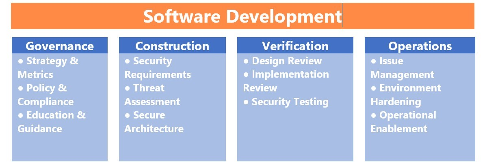
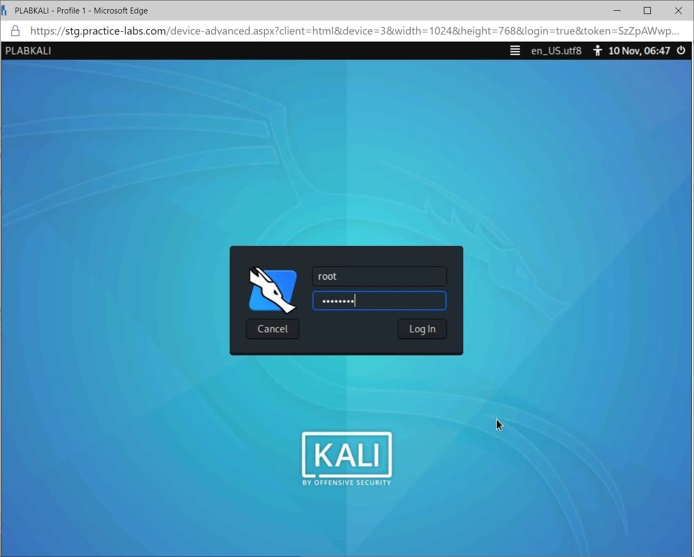
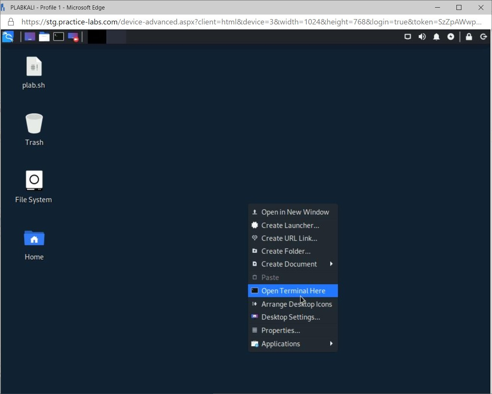
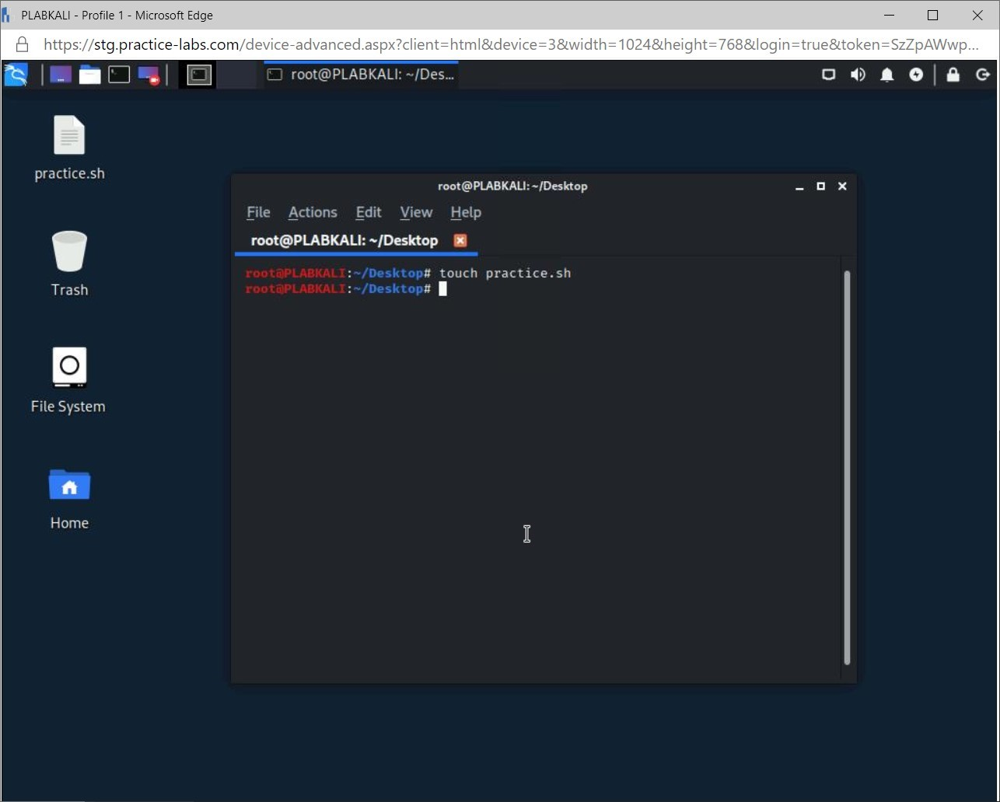
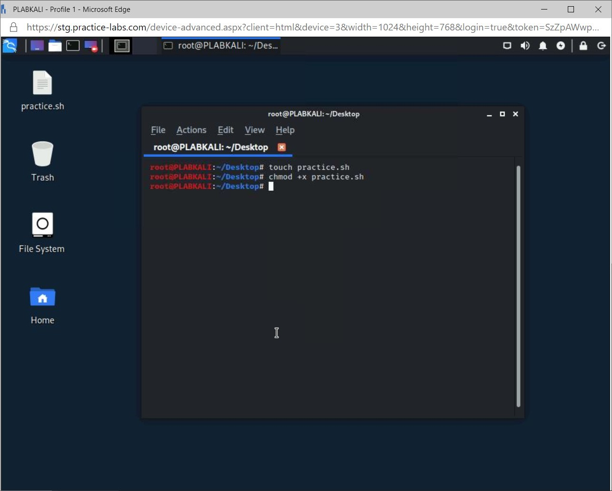
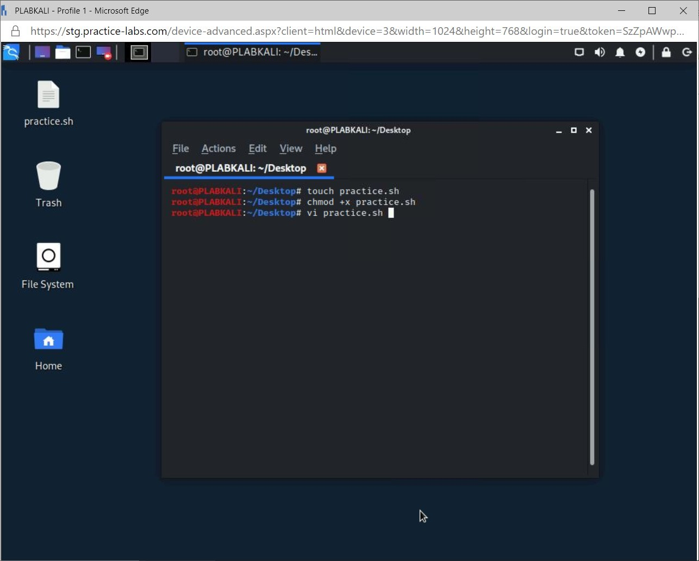
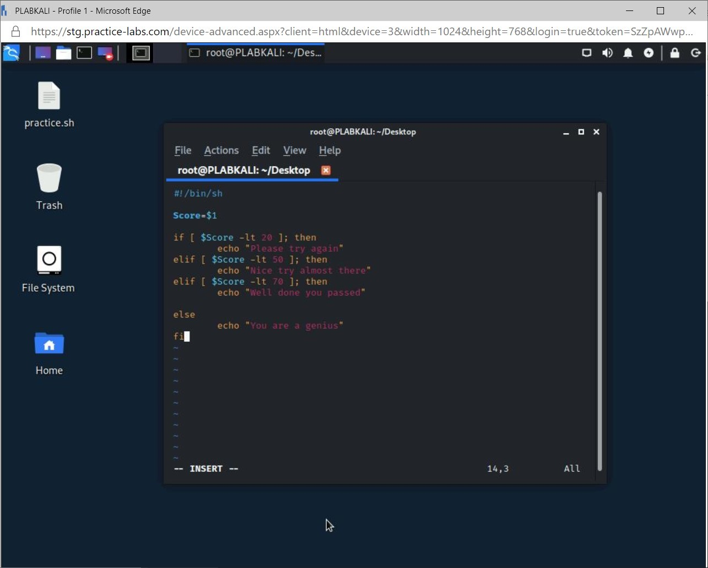
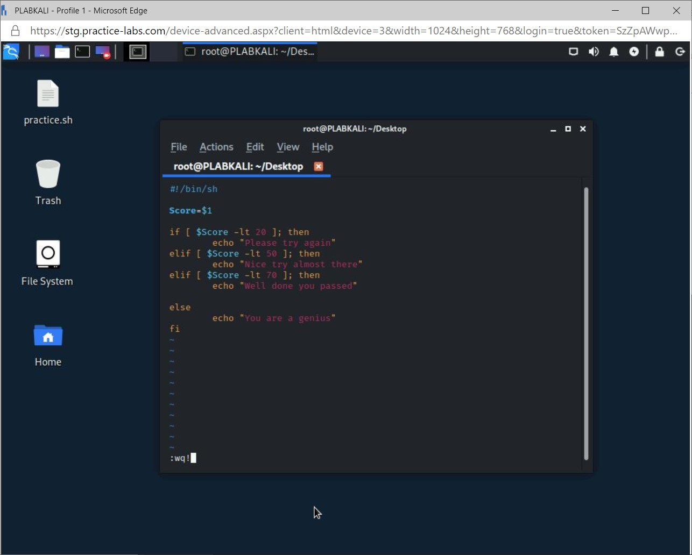
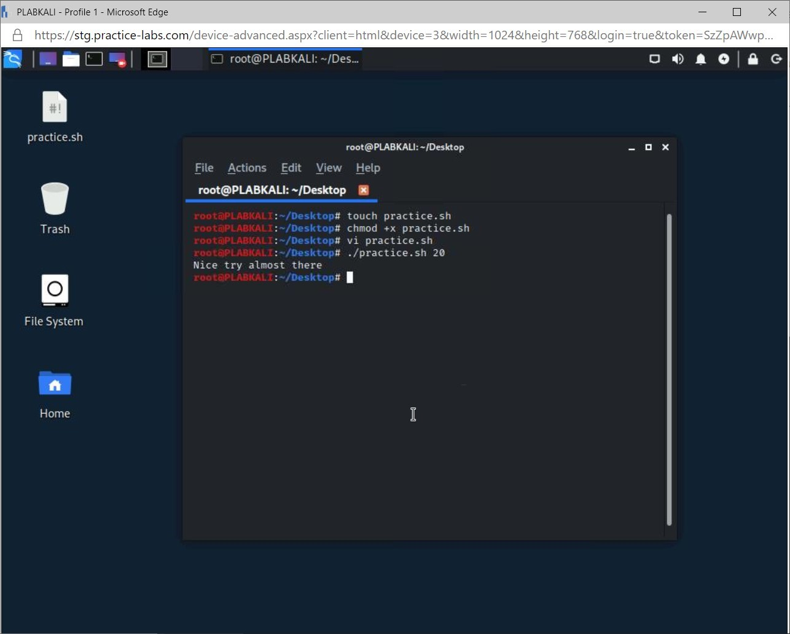
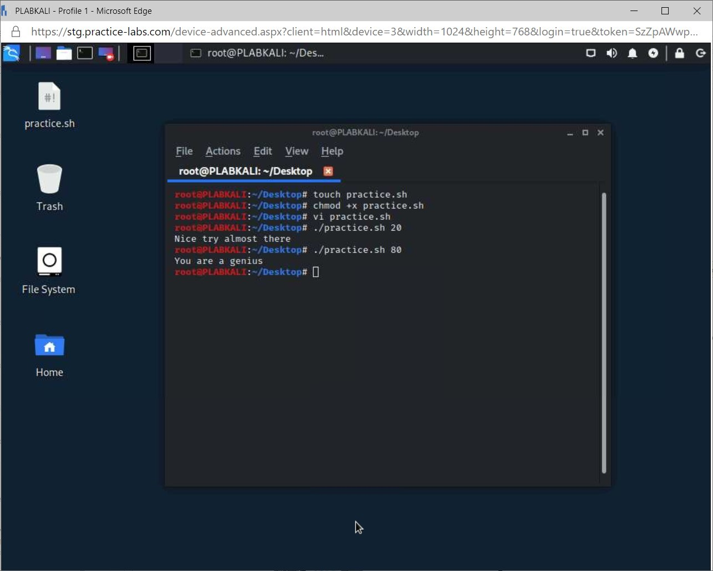

Introduction
bb1840e4-5425-49a3-9d75-477b8f016ff8
Welcome to the Application Hardening Deployment Techniques Practice Lab. In this module, you will be provided with the instructions and devices needed to develop your hands-on skills.
dc640c20-9434-45ea-b7c2-6d4d6a196bfc
Learning Outcomes
In this module, you will complete the following exercises:
- Exercise 1 - Secure Application Development, Deployment, and Automation Concepts
After completing this module, you should be able to:
After completing this module, you should have further knowledge of:
- Software Development Environment
- Secure Coding Techniques
- Open Web Application Security Project (OWASP)
- Software Diversity
- Automation/Scripting
- Automated Courses of Action
- Continuous Monitoring
- Continuous Integration
- Continuous Delivery
- Continuous Deployment
- Scalability
- Elasticity
- Version Control
Exam Objectives
The following exam objectives are covered in this lab:
2.3 Summarize secure application development, deployment, and automation concepts.
- Environment
- Provisioning and Deprovisioning
- Integrity Measurement
- Secure Coding Techniques
- Open Web Application Security Project (OWASP)
- Software Diversity
- Automation/Scripting
- Elasticity
- Scalability
- Version Control
Note: Our main
focus is to cover the practical, hands-on aspects of the exam
objectives. We recommend referring to course material or a search engine
to research theoretical topics in more detail.
Lab Duration
It will take approximately 45 minutes to complete this lab.
c6fa62a3-1a00-4052-8104-258e8cbaa187
Help and Support
For more information on using Practice Labs, please see our Help and Support page. You can also raise a technical support ticket from this page.
Click Next to view the Lab topology used in this module.
d2c53300-f951-45a9-9aa4-3d4ecae69e11
Lab Topology
During your session, you will have access to the following lab configuration.

Depending on the exercises, you may or may not use all
of the devices, but they are shown here in the layout to get an overall
understanding of the topology of the lab.
- PLABDC01 - (Windows Server 2019 - Domain Controller)
- PLABDM01 - (Windows Server 2019 - Domain Member)
- PLABWIN10 - (Windows 10 - Domain Member Workstation)
- PLABKALI - (Kali Linux 2019.4 - Standalone Server)
Click Next to proceed to the first exercise.
<
Home |
README >
CompTIA Security+ Practice Labs
Exercise 1 - Secure Application Development, Deployment, and Automation Concepts
Whenever an application is being developed, it is
essential to follow secure application development practices. Secure
application development will ensure that the application meets all the
requirements as defined by the company’s policy.
It is essential to develop the application according
to these practices to ensure the application will not be vulnerable to
exploits, leading to potential data loss, or the data could be
compromised.
After the application is built, a protected process is followed to test and then securely deploy it.
In this exercise, you will learn various concepts related to secure application development, deployment, and automation.
Learning Outcomes
After completing this exercise, you should have further knowledge of:
- Software Development Environment
- Provisioning and Deprovisioning
- Integrity Measurement
- Secure Coding Techniques
- Open Web Application Security Project (OWASP)
- Software Diversity
- Automation/Scripting
- Scalability
- Elasticity
- Version Control
Your Devices
You will be using the following device in this exercise. Please power this on now.
- PLABKALI - Kali 2019.4 (Stand-alone device)

Software Development Environment
There are various stages of software development. Each
stage needs to have a different and independent environment. In each
stage, either the application is developed or tested using its
environment.
For example, the development needs to be done in a
separate environment than testing. The reason is that the developer’s
system would have a near to perfect environment that will make the
application run. The tester would not be able to replicate the
real-world scenarios. Therefore, the testing environment needs to be
different.
Some of the key environments that are used in software development are:
Development
In the development environment, the developers code
the application. In this environment, for coding, you will find tools,
such as Microsoft Visual Studio, Eclipse, Apache NetBeans, and Microsoft
Code. The choice of coding application depends on the developer’s
preference and organization’s requirements. Other than the coding
application, you will also find version control applications, such as
SVN.
Test
Depending on the type of method, such as Waterfall or
Agile, being used for developing the application, the testers will
either test the full or partial application. The testing environment is
not a full replica of the development environment, but it contains only
the necessary hardware and software to run the application for testing
purposes.
Staging
Unlike testing, the staging environment replicates
the production environment. The idea is to simulate the production
environment and then test the application before it goes out to the
production environment. The staging tests are always performed before
the application is moved to the production stage.
Production
After the application has been through various
stages, and if it is found working, it is then moved to the production
environment, which is the live environment. The application is made
available to the users, who can either be internal or external to the
organization. Depending on the application architecture, the production
environment is likely to contain a Web server and database server.
Several organizations protect Web applications with a Web Application
Firewall (WAF).
Quality Assurance (QA)
The software may contain different types of errors,
which are known as defects. Some of the common types of defects that can
exist within the software are:
- Functional
- Compilation
- Run time
- Logical errors
- Inappropriate error handling
- Calculation
It is important to note that in the software
development lifecycle, the testing occurs quite late. Therefore, if any
of the defects are present in the software, they can either be caught
late in the lifecycle, or there can be a possibility that the defects
slip through the testing process.
Quality assurance is a method to keep your
applications defect-free. Some policies and guidelines define the
policies and procedures that must be followed while developing and
testing the application.
This broad-level concept can be applied in any type
of product development across industries. For example, you would often
buy a product, such as an electronic gadget, and find a small sticker
mentioning Quality Check OK.
Software assurance is a subset of quality assurance.
It is a process to ensure that the software functions as it is supposed
to and is free from defects. Software assurance is more focused on
developing software free from any kind of vulnerabilities and defects
that are security-related.
The software assurance process is built into the
software development lifecycle, which integrates the methods of
preventing, responding, mitigating, and remediating the defects
throughout the lifecycle.
The majority of Internet users connect to Web
applications, which are used for various purposes, such as online
banking, shopping, car rental, etc.
However, it is important to ponder what happens when
Web applications are not secure. Web applications can be hacked. Such
hacking incidents take place because there are bugs or defects within
the Web applications. The hackers tend to find such errors and exploit
them for their gains.
When an attack on a Web application takes place, it
either loses the data or stops functioning. The outcome of the Web
application depends on the type of hack that has been conducted. For
example, a hacker may simply walk away with the data without causing any
functionality issues. On the other hand, a hacker may simply gain
control of the entire application and its administrative privileges.
Software Assurance Risks
When developing software, different types of risks
must be thought through. The risks can be categorized into three
different categories:
Design Errors
It is often said that no software can be bug-free,
and it is true because, intentionally or unintentionally, the software
developers will leave defects within the software. Malicious entities,
such as hackers, later then exploit these defects. The attack on the
software can be in the form of malware, vulnerability exploitation, or
even through zero-day vulnerability discoveries and exploitation.
One method to prevent design errors is to use the best practices for secure software development and using the tools.
Ever Changing Technological Environment
The technological landscape is changing daily. With
new technology, there is always a risk of introducing new errors because
the software developers are not skilled enough to handle these errors.
On the other hand, hackers are one step ahead in their technology
awareness and develop innovative methods to find bugs and defects with
the developed software.
Malicious Insiders
A malicious insider is an employee of the company.
This person conducts malicious activity, which may include creating
vulnerabilities in the software when it is being developed.
More than the security or any other kind of defects,
finding malicious insiders is a more difficult task. During the
development process, you need to safeguard the code being developed. It
must be thoroughly tested to ensure that it is not developed with a
backdoor or any other security loophole. Best practices should be
applied when hiring developers. The organization must ensure a thorough
and strict background check.
Software Assurance Tools
As part of the software assurance process, you would
need to perform several tests on the software being developed. There are
several software assurance tools that you can use to ensure a secure
software product. Some of the key software assurance tools that you can
use are:
- FindBugs: Used for static analysis of Java code
- Peach: Is a fuzzing tool that can generate artificial input into a developed software
- SonarQube: Is an open-source tool for performing a static code analysis with several pre-defined rules
- Yet Another Source Code Analyzer (YASCA): Is
an open-source tool that can test software for vulnerabilities and code
quality. It can also be used for performance testing and adherence to
best practices.
Software Assurance Maturity Model (SAMM)
The Software Assurance Maturity Model (SAMM) is an
open framework that can be tailored by an organization to manage risks
faced with software development and security. Some of the key components
of SAMM are:
- Evaluate the software security practices within an organization
- Build a software security program
- Demonstrate improvements to an existing security assurance program
- Define and measure security-related activities that exist in an organization
SAMM can be applied and implemented with an
organization of any size. It can also be applied to the entire
organization or even a single project.
SAMM Architecture
Figure
1.1 Screenshot of SAMM Architecture: Showing various stages of software
development in the SAMM architecture Governance > Construction >
Verification > Operations
In the given architecture, SAMM defines four critical
functions that span throughout the entire software development
lifecycle. Each function has three security practices that must be
followed as shown below:
- Strategy and Metrics
- Policy and Compliance
- Education and Guidance
- Security Requirements
- Threat Assessment
- Secure Architecture
- Design Review
- Implementation Review
- Security Testing
- Issue Management
- Environment Hardening
- Operational Enablement
Provisioning and Deprovisioning
Provisioning and deprovisioning can be used in a
different context. It can be used in the context of user accounts. When
you create a user account and assign permissions to access resources on
the network, you have provisioned a user account. Similarly, when you
remove access for a user account, you are deprovisioning the user
account's permissions.
Similar to the user context, provisioning and
deprovisioning are also used in the application context. You configure
an application to run on a particular system, which means you are
provisioning it. When you remove the application from the system, you
are deprovisioning it.
Another context is the threads, processes, and
services. Sometimes, you need a process to run with elevated privileges.
This is, again, provisioning. When the privileges are removed for the
thread or the processes, it is the deprovisioning process.
Integrity Measurement
Each software or operating system runs with a certain
set of executables. When an executable is invoked, its integrity is
checked and verified to ensure that it is legitimate. There is an
integrity measurement tool or application that tracks the hash values of
the executables. As and when required, the tool can produce the list of
executables along with their hash values. With the list of executables
and hash values, it is easy to track if there are unknown or
illegitimate executables running in the system.
Secure Coding Techniques
Developing a secure application is generally
considered to be difficult. There is no single practice that makes an
application secure. You would have to put several methods into practice,
but you have to remember that you should not make things complicated
for yourself.
The following is a list of secure coding techniques
that you can use, but it is important to note that some will only apply
depending on your requirements and development environment. For example,
if a database is not used, you need not worry about normalization and
stored procedures.
Normalization
Data normalization is the process of reorganizing the
data in the database to ensure that there is no duplicate or redundant
data and that all the data is stored logically. Grouping of data that
has dependencies on other data will increase the database performance.
When you use a database for an application, the
database may contain redundant data, which can eventually impact the
database performance. A larger table is broken down into smaller tables
with the normalization process, further connected using relationships.
There are different levels of normalization. They are:
- 1NF - First Normal Form
- 2NF - Second Normal Form
- 3NF - Third Normal Form
- BCNF - Boyce-Codd Normal Form
- 4NF - Fourth Normal Form
- 5NF - Fifth Normal Form
- 6NF - Sixth Normal Form
Stored procedures
A stored procedure is a group of SQL statements that
can be reused as and when required. For example, if you have to run a
SQL query multiple times, you can save the SQL query in the form of a
stored procedure and then execute it. This saves you the trouble of
rewriting the query.
A set of parameters can also be passed to stored
procedures, which then are acted upon. Stored procedures are primarily
used to prevent SQL Injection attacks, which allows the attacker to gain
access to the database, to modify or extract information.
Obfuscation/Camouflage
Obfuscation is a method in which an application is
written to make it difficult to interpret its inner functionality. This
is used as a security method to prevent an attacker from understanding
the application’s code.
By implementing obfuscation for an application will
harden the application and prevent that an attacker can tamper or
reverse engineer the application’s code.
A downside to obfuscation is that troubleshooting
issues will be more difficult especially if the developer is not
familiar with the obfuscation that was applied.
Code Reuse/Dead Code
Code reuse is a method of utilizing the existing code
into new software or application being developed. When you have a piece
of code that is working with an existing application, it is possible
that the code can be used with another application that you are
developing.
Let’s take an example. You have a login form in an
existing application that verifies the users and authenticates them. If
the user does not exist, it also allows the users to create an account
for themselves. In the new application that you are developing, you need
to develop the same features on the login form. Since you already have
the code, which has passed the testing stage and is live in the
production environment, you can use the same code.
When you reuse a piece of code, there is a possibility of introducing dead code into the new application.
For example, the new application you are developing
uses the same login form code, including the CAPTCHA functionality.
However, the new application login form does not require CAPTCHA
functionality.
You integrate the complete piece of code without
removing the CAPTCHA functionality. This means the code relating to
CAPTCHA is the dead code.
It will exist within the new application's login form but will have no purpose and is never executed.
Server-side vs. Client-side Execution and Validation
Whenever you submit a form in a Web application,
there is a certain level of input validation that is being performed.
Validation is required to restrict the user from entering any type of
malicious input. To perform user validation, two different methods can
be used.
The first method is the server-side validation
method. In this method, the input is sent to the server for validation.
After server validation, the validation response is sent back to the
user, typically in a new dynamically generated page. In the second
method, the validation is performed on the client-side. The user input
is validated in the Web browser before it is submitted to the server.
When you talk about the server-side validation, it
provides better security against the malicious inputs. This is because
the server owns the responsibility of performing validation of the user.
On the other hand, the client-side validation provides a better user
experience. However, it can be easily bypassed. For example, JavaScript
is mostly used for client-side validation. If JavaScript is switched off
in the Web browser, then the user can bypass the client-side
validation.
Memory Management
When developing an application, the developers must
use security memory management methods while coding. If memory
management is not handled properly, it can lead to various
memory-related vulnerabilities, such as memory leak or buffer overflows,
which can then be exploited by the attacker.
Use of Third-party Libraries and Software Development Kits (SDKs)
When you are developing an application, there are
several components or features that you can avoid developing by using
third-party libraries or SDKs. For example, if you need to implement
encryption within the application, you either write the code yourself or
use third-party libraries. The better choice would be to use
third-party libraries, which have been properly tested and used by
several other developers.
SDKs are also third-party libraries, but a specific
vendor provides them. For example, Google or Microsoft may provide SDKs
with their products or use the SDKs to integrate with other products.
Using third-party libraries and SDKs help you avoid
several software development errors. You can simply plug-in the
third-party libraries or use SDKs that will provide several features.
Data Exposure
At any given time, data can be in one of the three stages:
- Data at rest
- Data in transit
- Data in use
When developing an application, the developers need
to ensure that data, at whichever stage, must be handled correctly. For
example, if a user uses the application and submitting or downloading
the data, then the transit data should be protected by encryption. In
similar cases with the other two stages, the data must never be exposed
to any individual who is not entitled to see or access the data.
If the data is exposed to an individual, who may be
malicious, the data can not only lose its confidentiality, but its
availability and integrity can also be at stake. Proper coding
techniques should be used by implementing security controls to protect
the data at any given stage.
Open Web Application Security Project (OWASP)
The Open Web Application Security Project is a
non-profit worldwide community dedicated in assisting organizations and
developers to improve the security of the development of software web
applications.
Open Web Application Security Project releases the
top 10 Web application vulnerabilities every three to four years. This
data is collected from various partners and organizations through
extensive research, after which the top 10 Web applications are
selected. There are hundreds of Web application vulnerabilities but the
most used attacks are listed in the top ten of OWASP.
When conducting a penetration test the top ten vulnerabilities can be used as listed by OWASP.
The top 10 Web application vulnerabilities of 2017 released by OWASP are:
- A1:2017-Injection
- A2:2017-Broken Authentication
- A3:2017-Sensitive Data Exposure
- A4:2017-XML External Entities (XXE)
- A5:2017-Broken Access Control
- A6:2017-Security Misconfiguration
- A7:2017-Cross-Site Scripting (XSS)
- A8:2017-Insecure Deserialization
- A9:2017-Using Components with Known Vulnerabilities
- A10:2017-Insufficient Logging & Monitoring
Software Diversity
With the technology pacing at a great speed,
customers have formed different expectations and layout different
requirements. You may have to bring out different variants of an
application to run on different architectures. The variations that are
used in the applications are known as software diversity.
Let’s first understand the meaning of diversity. In a
society, there are people from different cultures. They live and work
together. This is the diversity of the society that incorporates
different cultures. Similarly, you may have to develop different
variants of an application to meet the customer requirements, which is
defined as software diversity.
Software diversity impacts software development
phases. In the early phases of software development, you need to
understand the various requirements of the customer. The requirements
are then developed in the form of an application using different
architectures. Software diversity, however, does add complexity to the
application as it needs to be designed to run on different hardware
architectures.
One method through which the software diversity can
be achieved is by using a multi-compiler, which embeds a diversification
engine into the code. When the code is compiled, the multi-variant
execution environment (MVEE) uses the correct binary to execute. The
multi-compiler can generate different builds of a software depending on
the environment. Each build, even in different environments, behaves in
the same manner. However, the security risks may differ in each build in
their own respective environments.
Automation/Scripting
An administrator or a security professional has to
perform several tasks that require manual intervention. Let’s consider
an example of an administrator who performs system administration tasks
on various servers daily. Each server takes nearly 30 minutes of the
administrator’s time. Depending on the number of servers, you can use
multiple the number with 30 to get the total number of minutes that the
administrator spends on a manual activity. To solve this problem, it is
best to automate these tasks. One of the best methods is to use
scripting, which can reduce the administrator’s manual intervention.
Most of the operating systems, such as Windows and Linux, provide the scripting environment.
- Windows: PowerShell, batch files
- Linux: Bash and other variants
A few things, whether you use Linux or Windows
environment, remain constant. Scripts use variables and various
statements, such as if…else.
A variable in a script is mainly used for storing
data temporarily in memory. A variable can hold different types of data,
such as characters, white spaces, alphanumeric characters, special
characters, and numerous others.
There are two types of variables:
Environmental variables are defined for the
current shell. These variables are then inherited and used by the child
shells and the processes. On the other hand, shell variables work
within the shell in which they are defined.
Example:
In a script, you can declare a variable and assign a value to it.
x=10
Rather than using the value directly, which can be
changed, you can simply use the variable. Even if you change the
variable's value, you don’t have to change it in the code because only
the variable is being used.
Let’s now look at different types of loop statements.
Note: This module only provides a brief overview of scripting and loop statements.
Task 1 - If…else Statements
The if…else statements are mainly used for making a decision and, therefore, are known as decision-making statements.
When you have to choose from two given choices, the
if…else statements work well. However, there may be a scenario in which
you will have to work with multiple conditions to choose from, then in
that scenario, esac… statements need to be used.
In shell scripting, you can use three different types of if…else statements. They are the following:
- if...fi statement
- if...else...fi statement
- if...elif...else...fi statement
Step 1
Connect to PLABKALI and log in with the following credentials
Username:root
Password: Passw0rd
Figure 1.2 Screenshot of PLABKALI: Displaying logging into the Kali device.
Step 2
Right-click on the desktop and select Open Terminal here.
Figure 1.3 Screenshot of PLABKALI: Displaying opening the terminal window from the desktop.
Step 3
In the terminal window, type the following and press Enter:
touch practice.sh
Figure 1.4 Screenshot of PLABKALI: Displaying creating an If...Else bash script.
Note: Using the touch command creates the file that will be used for the if..else script.
Step 4
Type the following and press Enter:
chmod +x practice.sh
Figure 1.5 Screenshot of PLABKALI: Displaying creating an If ...Else bash script.
Note: The command that was executed will change the file to an executable file.
Step 5
Type the following in the terminal window and press Enter:
vi practice.sh
Figure 1.6 Screenshot of PLABKALI: Displaying editing the script file.
Step 6
In the text editor, enter insert mode by pressing the letter i key and enter the following:
#!/bin/sh
Score=$1
if [ $Score -lt 20 ]; then
echo “Please try again”
elif [ $Score -lt 50 ]; then
echo “Nice try almost there”
elif [ $Score -lt 70 ]; then
echo “Well done you passed”
else
echo “You are a genius”
fi
Figure 1.7 Screenshot of PLABKALI: Displaying saving the bash script and exiting vi text editor.
Step 7
In the text editor, press the ‘ESC’ key, enter the following and then press Enter:
:wq!
Figure 1.8 Screenshot of PLABKALI: Displaying creating an If…else bash script.
Step 8
In the terminal window, type the following and press Enter:
./practice.sh 20
Figure 1.9 Screenshot of PLABKALI: Displaying executing the If....else script file with different parameters.
Step 9
In the terminal window, type the following and press Enter:
./practice.sh 80
Figure 1.10 Screenshot of PLABKALI: Displaying the If…else script file with different parameters.
Note: An If…else
bash script can be used to test different variables for example when a
user tries to login and to validate their credentials.
80e3ace3-3818-477e-9d50-9fdfea66eb75
Automated Courses of Action
As described earlier, scripting helps an
administrator automate certain actions that they would perform manually.
Scripting requires programming knowledge, but it serves various
benefits. Some of the key benefits are:
- Output: No matter how many times you run the script, you will get the same output because the code remains static.
- Speed: The task that you can manually accomplish in one hour, the script will cut it down to a few minutes.
- Productivity: When you save time in
performing a task, you increase your productivity. The time that you
were spending on manual tasks can be utilized in other tasks.
- Cost: When you save time, you save money. Scripts provide the same result every time in lesser time.
- Errors: Manually doing a task can lead to errors. Different individuals also have different results. Scripts reduce the errors.
Continuous Monitoring
Whenever you deploy one or more systems, you have to
continuously monitor them, which means that you should have an
around-the-clock monitoring system. You need to continuously monitor the
systems for performance and security, which are related to
vulnerabilities and threats.
Continuous Validation
Continuous validation is the process of performing
black box and white box testing on the software builds. The idea is to
perform effective testing and ensure that all bugs are located and
reported correctly to the development team. Several organizations use
various automated tools to generate a stable build, which is virtually
free from errors. However, the testing team must ensure that the stable
build is also tested and put through continuous validation.
Continuous Integration
Continuous integration is a type of development
process in which, rather than committing the code once, the developers
continue to commit the code regularly. The frequency of the code commit
is several times a day. As the developers finish a piece of code, they
commit the code, followed by automated builds and automated tests.
Continuous integration requires the developers to work together and
integrate code for building a complete product.
Continuous Delivery
Continuous delivery extends the continuous
integration by incorporating the new changes into the application
builds. In continuous delivery, the release process is also automated.
When you integrate your code into an existing code base, the application
can be deployed with a click of a button.
Continuous delivery frequency can vary from
organization to organization. Some may decide the frequency to be daily,
while others may decide the frequency to be weekly or fortnightly.
However, it is recommended that the code commit frequency should be as
short as possible. The key intent is to catch the defects if there are
any in each build.
Continuous Deployment
In the continuous deployment, all the code that has
passed through all stages of software development is released into
production. The continuous deployment process is automated and does not
require any human intervention. With automation, you can perform quick
deployments into different environments if required.
The fundamental difference between continuous
delivery and continuous deployment is that continuous delivery builds,
tests, and performs a manual deployment to production. On the other
hand, continuous deployment follows the same process, but there is an
automated deployment instead of manual deployment. As soon as the build
is ready, tested, it is deployed to the production environment
automatically.
Scalability
Each system you use has a certain level of resources,
which are consumed by the operating system and applications. There are
times when the applications require more resources to provide optimal
performance. However, if the system has run out of resources, then you
have to look at scalability. You can either add more resources to the
system and gain optimal application performance. This method is known as
scaling up.
On the other hand, if there is no possibility of
adding more resources to the system, you can add another system to
handle the load of the application. When you add another load, the
application load can be split between both the systems. This method is
called scaling out.
In the simplest term, scalability means increasing
the resources to meet the demands of the resources generated by the
application(s).
Elasticity
Even though elasticity is similar to scalability, but
it works differently. When there are workloads that increase, the
resources are provided to the application in an automated fashion. When
the workload decrease, the resources are removed. In elasticity, you
mostly work with the scale-out method where more systems are added to
handle the workload. Elasticity is a popular phenomenon in the cloud
environment.
Version Control
In the software development world, a developer writes
the code. Then, the code is reviewed and updated from time to time, not
only to remove bugs but also to improve.
For example, a slight change in the code might add to
application performance. Every time the code is reviewed and updated,
its version changes. Tracking every change in the code is called version
control and can also apply to the documents you create.
When you make a change to the code, it needs to be
tracked for version. Let’s consider an example. You write the code, and
your peer makes a change to the code. If there is no version control
system in place, it will not be possible to determine who made the
change, what the changes were, and when the changes were made. Every
time a change is made to the code, its version is automatically saved.
Any time you need to revert to the previous version, you can do it
without any hassle.
When a version control system is in place, the
developers need to work on the code and check it. After the developers
make the code changes on their local systems, the code is then checked
back into the version control system.
Typically, when the developer is checking in the
code, there is a need to add a description of the changes. In this
process, all changes are tracked in the version control system. When
there is a need to check out, for example, the first version, it can be
done by checking out the code.
d31298f5-3011-4089-bf06-fbf08c44a7f9
Keep all devices that you have powered on in their current state and proceed to the review section.
Review
Well done, you have completed the Application Hardening Deployment Techniques Practice Lab.
c6e74811-6d1f-4779-94c2-34fcca239022
5fe62fe5-1629-468f-a831-34376d8ae336
61868b94-106f-4115-b721-435485f1e6f1
669dcb3c-6955-449d-8d3e-1740f3d4e170
cb74346b-3b99-428f-a460-49af56649374
e12f6884-15c5-4f36-8068-5d926f78df44
aaaaaaaa-1111-1111-1111-193f35a24fe3
Summary
You completed the following exercises:
- Exercise 1 - Secure Application Development, Deployment, and Automation Concepts
You should now be able to:
You should now have further knowledge of:
- Environment
- Provisioning and Deprovisioning
- Integrity Measurement
- Secure Coding Techniques
- Open Web Application Security Project (OWASP)
- Software Diversity
- Automation/Scripting
- Scalability
- Elasticity
- Version Control
Feedback
067744a4-4299-4662-b5be-04dbb636a007
Shutdown all virtual machines used in this lab. Alternatively, you can log out of the lab platform.